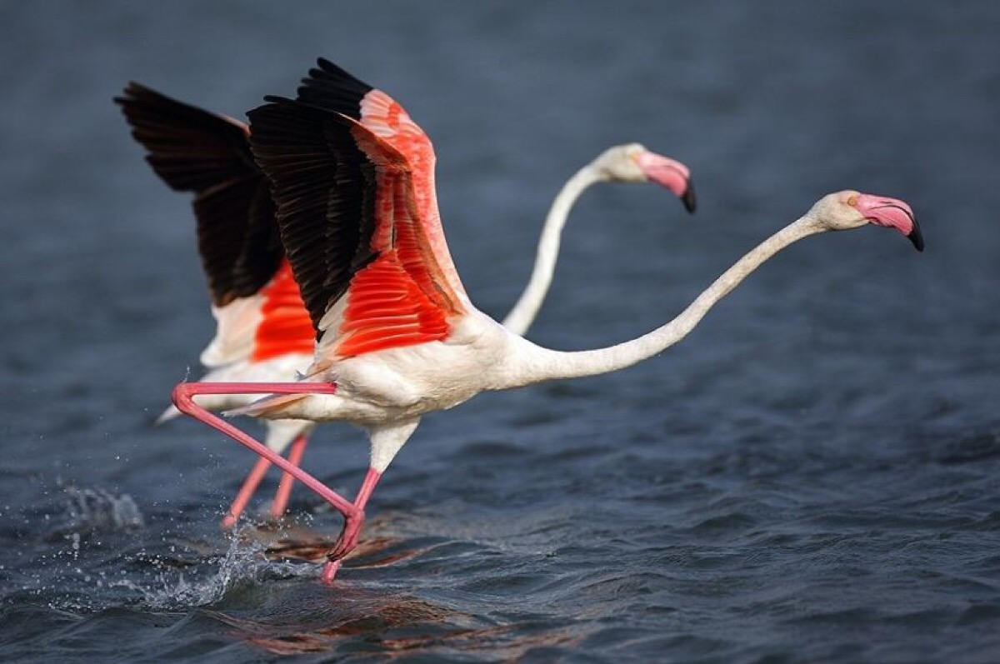
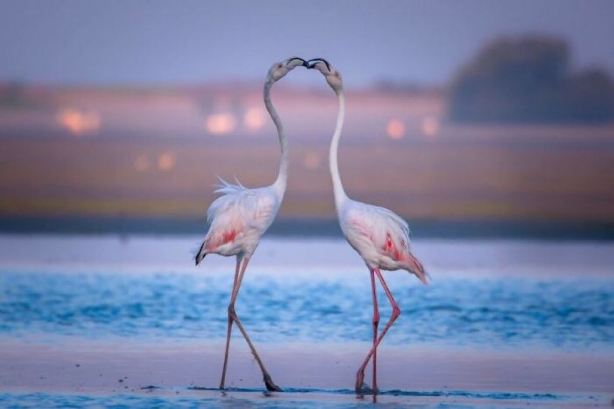
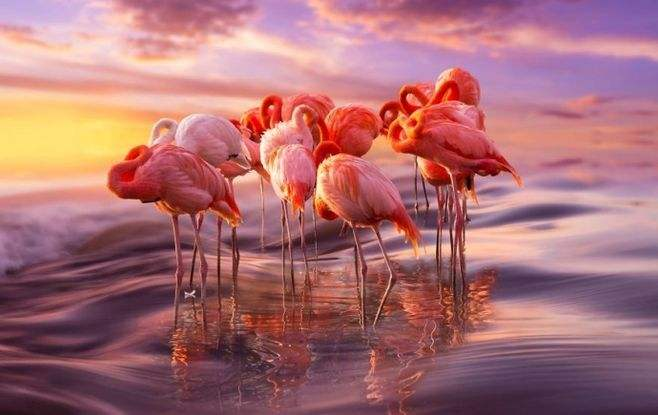

火烈鸟体型大小似鹳，高约80-160厘米，体重2.5-3.5千克。雄性较雌性稍大；通身为洁白泛红的羽毛，翅膀上有黑色部分，覆羽深红，诸色相衬。火烈鸟脖子长，常呈S型弯曲；嘴短而厚，上嘴中部突向下曲，下嘴较大成槽状，上喙比下喙小；脚极长而裸出，向前的3趾间有蹼，后趾短小不着地；翅大小适中；尾短。
全身的羽毛主要为朱红色，特别是翅膀基部的羽毛，光泽闪亮，远远看去，就像一团熊熊燃烧的烈火，因此叫火烈鸟。该物种的体形长得也很奇特，身体纤细，头部很小，镰刀形的嘴细长弯曲向下，前端为黑色，中间为淡红色，基部为黄色。黄色的眼睛很小，与其庞大的身躯相比，显得很不协调。细长的颈部弯曲呈“S”形，双翼展开达150厘米以上，尾羽却很短。有一双又细又长的红腿，脚上向前的3个趾间具红色的全蹼，后趾则较小而平置。
但红色并不是火烈鸟本来的羽色，而是来自其摄取的浮游生物（据2008年荷兰莱顿大学的科学家弗朗西斯科·布达教授和他的实验小组成员，通过精确的量子计算手段发现火烈鸟、三文鱼、虾、蟹等呈现出诱人的鲜红色的原因，是因为火烈鸟、三文鱼、虾、蟹等都富含Astaxanthin简称ASTA中文名字叫虾青素，而动物是无法合成虾青素的，虾、蟹大部分通过食用藻类和浮游生物等植物获取虾青素，火烈鸟通过食用以小虾、小鱼、藻类、浮游生物等传递虾青素，而使原本洁白的羽毛透射出鲜艳的红色。同时红色越鲜艳则火烈鸟的体格越健壮，越吸引异性火烈鸟，繁衍的后代就更优秀。）
主要栖息在温热带盐水湖泊、沼泽及礁湖的浅水地带，生活在各种各样的盐水和淡水栖息地，如泻湖，河口，滩涂和沿海或内陆湖泊，主要靠滤食藻类和浮游生物为生。
喜欢结群生活，往往成千上万只，在非洲的小火烈鸟群是当今世界上最大的鸟群。在面积仅有13，939平方公里的中美洲的巴哈马，就栖息着多达5万只以上的加勒比海红鹳，甚至多达10万只以上聚集在一起。火烈鸟不是严格的候鸟。只在食物短缺和环境突变的时候迁徙。迁徙一般在晚上进行，在白天时则以很高的飞行高度飞行，目的都在于避开猛禽类的袭击。迁徙中的火烈鸟每晚可以50-60公里的时速飞行600公里。
火烈鸟与雁类相似的叫声此起彼伏，震耳欲聋，远远望去，红腿如林，一条条长颈也频频交替蠕动，十分壮观。它们性情温和，平时显得胆怯而机警，游泳的技术也很出色。飞翔时，能把颈部和两腿伸长呈一条直线，而且只要有一只飞上天空，就会有一大群紧紧跟随，边飞边鸣。
食物以水中的藻类、原生动物、小虾、蛤蜊、小蠕虫、昆虫幼虫等为主，偶尔也吃小的软体动物和甲壳类。进食的方法与众不同，十分奇妙，先把长颈弯下，头部翻转，然后一边走一边用弯曲的喙向左右扫动，触摸水底取食。由于喙的构造特殊，下喙的沟深，上喙的浅而呈盖形，边缘有稀疏的锯齿和细毛，倒置在水中就像个大筛子一样，可以快速地将水吸进来和滤出去，觅食时头往下浸，嘴倒转，将食物吮入口中，把多余的水和不能吃的渣滓排出，并使食物留在嘴里徐徐吞下。另外它的舌很大，也可以帮助将水压出和防止吞食大块的物体。
火烈鸟分布于热带和亚热带地区，包括南北美洲，加勒比海和加拉帕戈斯群岛、非洲、马达加斯加、欧洲南部、西南亚、中东和印度次大陆。大典型的热带地区，也可以在南美洲的安第斯山脉中找到。
分布于安哥拉、博茨瓦纳、布隆迪、喀麦隆、刚果民主共和国、吉布提、厄立特里亚、埃塞俄比亚、加蓬、冈比亚、几内亚、几内亚比绍、印度、肯尼亚、莱索托、马达加斯加、马拉维、毛里塔尼亚、莫桑比克、纳米比亚、巴基斯坦、塞内加尔、塞拉利昂、南非、坦桑尼亚联合共和国、乌干达、也门、阿富汗、乍得、科摩罗、埃及、加纳、伊朗伊斯兰共和国、毛里求斯、摩洛哥、尼日尔、尼日利亚、阿曼、卢旺达、圣多美和普林西比、沙特阿拉伯、索马里、西班牙、斯里兰卡、斯威士兰、阿拉伯联合酋长国、苏丹、阿根廷、玻利维亚、智利、秘鲁、巴西、智利、厄瓜多尔、巴拉圭、秘鲁、乌拉圭、福克兰群岛（马尔维纳斯群岛）、亚美尼亚、阿塞拜疆、巴林、孟加拉国、博茨瓦纳、布隆迪、柬埔寨、佛得角、科摩罗、塞浦路斯、吉布提、厄立特里亚、埃塞俄比亚、法国、冈比亚、直布罗陀、希腊、几内亚、几内亚比绍、印度、伊朗伊斯兰共和国、伊拉克、以色列、意大利、约旦、哈萨克斯坦、肯尼亚、科威特、黎巴嫩、利比亚、马其顿、马达加斯加、马拉维、马尔代夫、毛里塔尼亚、马约特、摩洛哥、莫桑比克、纳米比亚、尼泊尔、阿曼、巴基斯坦、巴勒斯坦、葡萄牙、卡塔尔、俄罗斯联邦、圣多美和普林西比、沙特阿拉伯、塞内加尔、塞舌尔、塞拉利昂、斯洛文尼亚、索马里、南非、西班牙（加那利群岛 ）、阿拉伯叙利亚共和国、突尼斯、土耳其、土库曼斯坦、乌干达、乌兹别克斯坦、西撒哈拉、也门、赞比亚津、巴布韦、奥地利、白俄罗斯、比利时、保加利亚、喀麦隆、中国、科科斯群岛、刚果、刚果民主共和国、克罗地亚捷克共和国、丹麦、赤道几内亚、芬兰、德国、匈牙利、吉尔吉斯斯坦、拉脱维亚、莱索托、马耳他、毛里求斯、蒙古、黑山、尼日尔、挪威、波兰、罗马尼亚、塞尔维亚、斯洛伐克、斯威士兰、瑞典、瑞士、塔吉克斯坦、阿鲁巴、巴哈马、博内尔岛，圣尤斯特歇斯和萨巴岛、巴西、哥伦比亚、古巴、多明尼加共和国、厄瓜多尔、法属圭亚那、圭亚那、海地、牙买加、墨西哥、苏里南、特立尼达和多巴哥、特克斯和凯科斯群岛、美国、委内瑞拉玻利瓦尔共和国、维尔京群岛、安圭拉、巴巴多斯、伯利兹、百慕大、加拿大、开曼群岛、瓜德罗普岛、洪都拉斯、波多黎各、圣基茨和尼维斯、圣卢西亚。
2009年12月，国际野生动物保护协会（WCS）公布了一批因气候变化而濒临灭绝的野生动物名单：其中介绍火烈鸟是世界珍稀鸟类，由于全球湿地面积迅速缩减，火烈鸟的生存岌岌可危。
2017年7月29日，西班牙马拉加丰特德彼德拉湖，火烈鸟以及雏鸟的繁殖情况，该湖是伊比利亚半岛上的火烈鸟最重要的繁殖地，也是一个自然保护区，也是鸟类的天堂，在当地生活的有记录的物种超过170种。
